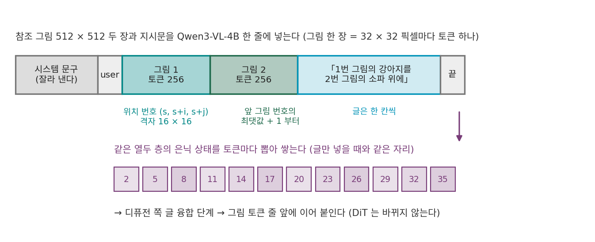

그림 끼운 프롬프트: 시각언어모델이 참조와 지시문을 함께 읽는다
참조를 여러 장 이어 붙이고 번호까지 매겼다. 그래도 하나가 남는다. 사용자는 「1번 사진의 강아지를 2번 사진의 소파 위에」라고 쓴다. 이 글은 글 인코더를 거쳐 글 토큰이 된다. 그런데 글 인코더는 사진을 본 적이 없다. 글 속의 「1번」이 디퓨전 쪽 좌표의 「번호 1」과 같은 것이라는 약속은 어디에도 없다. 블록이 학습 자료에서 그 짝을 스스로 찾아내기를 바라야 한다. 사진과 지시문을 처음부터 함께 읽은 모델이 그 둘을 이어 주면 어떨까? 글 인코더 자리에 이미 그런 모델이 있다. 그림까지 읽는 시각언어모델이다.
역사: 뜻을 읽는 쪽과 결을 지키는 쪽
Qwen 팀은 기술 보고서에서 글 인코더로 Qwen2.5-VL 을 고른 까닭을 셋으로 적었다. 언어와 그림의 공간이 이미 맞춰져 있고, 언어모델로서의 능력이 크게 떨어지지 않았고, 그림을 입력으로 받을 수 있어 편집 같은 일을 열어 준다는 것이다. 편집 모델에서는 입력 그림을 두 길로 넣었다. Qwen2.5-VL 에 넣어 뜻을 담은 특징을, VAE 인코더에 넣어 결을 되살릴 특징을 얻고, 둘을 함께 조건으로 썼다. 보고서는 이것을 「이중 인코딩」이라 부르며, 뜻을 지키는 일과 눈에 보이는 결을 지키는 일 사이에서 균형을 잡게 해 준다고 적었다. 시스템 문구도 바꿨다. 「입력 그림의 주요 특징을 묘사하고, 사용자의 지시가 그림을 어떻게 바꿔야 하는지 설명하라」는 문구로 감싼다.
krea.ai 의 Krea 2 는 글 인코더가 처음부터 시각언어모델 Qwen3-VL-4B 다. 글만 넣을 때는 언어 쪽만 쓰지만, 같은 가중치 파일에 그림을 읽는 쪽이 들어 있다. 디퓨전팜(dfarm)의 Krea 2 노드(node/krea2/te.py 의 encode_context_mm)는 ComfyUI 용 Krea 2 글 인코더 확장의 방식을 옮겨, 참조 그림을 Qwen3-VL 의 토큰 줄에 끼워 넣고 글만 넣을 때와 같은 열두 층의 은닉 상태를 뽑는다. 디퓨전 쪽(DiT 와 샘플러)은 하나도 바뀌지 않는다.
그림 한 장이 토큰 몇 개가 되나
Qwen3-VL 의 그림 쪽은 그림을 16 × 16 픽셀 조각으로 자르고, 이웃한 2 × 2 조각을 하나로 합쳐 언어 쪽 토큰 하나로 만든다. 32 × 32 픽셀마다 토큰 하나다.
512 × 512 참조는 16 × 16 = 256토큰이다. 위치는 세 축(시간·행·열)으로 매기는데(M-RoPE), 그림 토큰은 행·열 축에 그림 안의 자리가 더해지고, 그림이 끝나면 다음 글은 그림 위치 번호의 최댓값 다음부터 이어진다(transformers 의 Qwen3VLModel.get_rope_index). 그림 토큰 256개가 위치 번호는 16칸만 차지한다. 그림 쪽 24층 가운데 5, 11, 17번째 층의 특징은 따로 뽑아, 언어 쪽 첫 세 층의 출력에서 그림 토큰 자리에 더한다(DeepStack, 설정의 deepstack_visual_indexes). 그 뒤 36층을 지나며 그림 토큰과 글 토큰이 서로를 읽는다.

이렇게 참조 그림을 토큰으로 바꿔 지시문 사이에 끼워 넣고, 시각언어모델이 둘을 함께 읽은 은닉 상태를 조건으로 넘기는 것을 이 책에서는 그림 끼운 프롬프트 (그림과 지시문을 함께 읽는 조건 / multimodal prompt)라 부른다. 언어모델 안에서 「1번 사진」이라는 글 토큰은 바로 앞에 놓인 그림 토큰들을 어텐션으로 읽을 수 있다. 글과 그림의 짝을 디퓨전 쪽이 찾을 필요 없이, 조건 벡터가 만들어질 때 이미 이어져 있다.
ML에서: 같은 그림을 두 길로
ComfyUI 의 TextEncodeQwenImageEditPlus 노드는 그림마다 두 일을 한다. 시각언어모델에 넣을 그림은 넓이 384 × 384 에 맞춰 줄이고, 지시문 앞에 「Picture 1: 」, 「Picture 2: 」 같은 이름표와 그림 자리표시를 붙인다. VAE 로 잠재를 만들 그림은 넓이 1024 × 1024 에 맞춘다. 앞의 것은 이름표가 붙은 뜻을, 뒤의 것은 이어 붙일 결을 맡는다. Qwen2.5-VL 은 14 × 14 픽셀 조각을 2 × 2 로 합쳐 28 × 28 픽셀마다 토큰 하나라, 384 × 384 그림은 392 × 392 로 맞춰져 196토큰이 된다(comfy/text_encoders/qwen_vl.py).
dfarm 의 Krea 2 노드는 그림 자리표시만 장 수만큼 이어 놓고 이름표는 붙이지 않는다. 시스템 문구는 「참조 그림의 주요 특징을 묘사하고, 사용자의 지시가 그것과 어떻게 합쳐지거나 바꿔야 하는지 설명한 뒤, 참조와 맞는 새 그림을 만들라」로 바꾼다(KREA2_REF_SYSTEM). 이 노드는 참조 잠재를 이어 붙이지 않고 이 길 하나만 쓴다. 부정 프롬프트 쪽은 그림 없이 글로만 인코딩한다.
| 길 | 참조가 들어가는 꼴 | 한 장의 토큰 (참조 1024 × 1024) | 참조를 어떻게 가르나 |
|---|---|---|---|
| ControlNet | 복제 인코더의 특징 지도를 같은 칸에 더함 | 토큰이 아니라 칸 | 가를 수 없음(더해진다) |
| IP-Adapter | 따로 읽는 크로스 어텐션의 토큰 | 4 또는 16 | 위치 없음(주머니) |
| 참조 이어 붙이기 | 생성 그림과 같은 줄의 잠재 토큰 | 4,096 (잠재 1/8, 패치 2) | 번호 축 |
| 그림 끼운 프롬프트 | 시각언어모델이 함께 읽은 글 쪽 토큰 | 1,024 (Qwen3-VL) | 글의 순서와 이름표 |
문제 13. 사진관에 보내는 부탁
사진관에 「왼쪽 사진 사람에게 오른쪽 사진의 재킷을 입혀 주세요」라는 메모와 사진 두 장을 보낸다. (가) 사진 두 장을 한 봉투에 넣고 메모를 따로 보내면 무엇이 문제인가? (나) 사진 뒷면에 「1」「2」를 쓰고 메모를 「1번 사람에게 2번 재킷을」로 바꾸면? (다) 메모와 사진을 한 장의 종이에 붙여, 사진 바로 아래에 「사람」「재킷」을 써 넣으면?

(가)는 봉투 안에서 왼쪽 오른쪽이 없어지니까, 어느 쪽이 사람 사진인지 모르죠.

(나)는 번호로 짝이 맞아. 다만 사진관이 「뒷면 번호 = 메모의 번호」라는 약속을 알아야 해.

그 약속은 누가 정했죠?

보내는 사람과 사진관이 미리 맞춰야 해요. 사진관이 그 약속을 모르면 번호가 있어도 소용없어요.

(다)는 약속이 필요 없네요. 사진 바로 아래에 글이 붙어 있으니까 읽는 순간 짝이 맞아요.

그래요. (가)가 위치 없는 참조 토큰, (나)가 번호 축과 글 속 「1번」을 블록이 학습으로 맞추는 길, (다)가 그림과 글을 한 줄로 함께 읽는 시각언어모델이에요.

조별 과제 파일 이름을 「최종1」「최종2」로만 붙이고 단톡방에 따로 설명하는 것보다, 파일 안 첫 줄에 누가 뭘 했는지 적어 두는 게 덜 헷갈리는 거랑 같네요.
문제 14. 그림이 차지하는 위치 번호
Qwen3-VL 의 한 줄에 글 토큰 20개(그림 시작 표시까지)가 먼저 오고, 768 × 1024(세로 × 가로) 그림 하나, 그 뒤에 글 토큰 10개가 온다. 처음 글 토큰의 위치 번호는 0~19 다. (가) 그림은 토큰 몇 개이고, 그림 토큰의 시간·행·열 위치 번호는 각각 어느 범위인가? (나) 뒤의 글 토큰 10개의 위치 번호는? (다) 모든 토큰에 위치 번호를 하나씩 차례로 매겼다면 마지막 토큰의 번호는?
(가) 768 ÷ 32 = 24, 1024 ÷ 32 = 32 라서 24 × 32 = 768토큰이요. 시간은 모두 20, 행은 20~43, 열은 20~51이에요.
(나)는 그림 위치의 최댓값 51 다음, 52부터 61까지.
(다)는요?

20 + 768 + 10 − 1 = 797이요. 차례로 매기면 그림 하나에 768칸을 쓰는데, 세 축으로 매기면 32칸만 써요.
그림의 위치는 칸 수가 아니라 가로세로 크기만큼만 나아가는 거네. 그래서 그림 뒤의 글은 그림 바로 다음 「줄」로 읽혀, 그림이 크다고 글이 멀리 밀려나지 않아.
그래요. 회전 위치 인코딩에서 멀리 떨어진 토큰일수록 점수가 흔들리니, 위치 번호를 아끼는 것이 그림 뒤의 지시문과 그림을 가깝게 두는 일이에요.

책에 그림 한 쪽이 끼어도 쪽수는 한 쪽만 늘지, 그림 속 점 수만큼 쪽수가 늘지는 않는 거네요.
문제 15. 세 장을 넣는 두 길
1024 × 1024 그림을 만드는 Krea 2 꼴 모델(생성 그림 토큰 4,096개, 글 512토큰)에 1024 × 1024 참조 세 장을 넣는다. (가) 참조를 시각언어모델로 읽어 글 쪽 토큰으로 넣으면 블록을 지나는 줄은 몇 토큰이고, 셀프 어텐션 쌍은 참조가 없을 때의 몇 배인가? (나) 참조 잠재를 이어 붙이면? (다) 참조 토큰 하나가 맡는 픽셀은 두 길에서 각각 몇 개이고, 그 차이는 무엇을 뜻하는가? (라) Qwen-Image-Edit 이 두 길을 함께 쓰는 까닭을 말하라.
위젯 1 에서 두 길을 번갈아 고르면 (가)(나)를 견주어 볼 수 있다.
(가)는 한 장이 32 × 32 = 1,024토큰이라 세 장에 3,072개, 줄은 4,096 + 512 + 3,072 = 7,680이에요. 쌍은 (7,680 ÷ 4,608)² = 2.78배요.
(나)는 한 장이 4,096이라 12,288개, 줄은 16,896, 13.44배요. 다섯 배쯤 더 무거워요.
그럼 늘 시각언어모델 길이 나을까요? (다)를 보죠.
시각언어모델 토큰 하나는 32 × 32 = 1,024 픽셀, 잠재 토큰 하나는 16 × 16 = 256 픽셀을 맡아. 게다가 잠재 토큰은 VAE 가 되살릴 수 있게 다듬은 수라 결이 거의 남는데, 시각언어모델 토큰은 36층을 지나며 「무엇이 있나」 쪽으로 정리된 값이야. 뜻은 잘 남지만 털 한 올, 글자 하나까지 남는다고 기대하긴 어려워.
그러니까 (라)는 둘이 맡는 게 달라서네요. 시각언어모델 쪽이 「무엇을 어떻게 바꾸라는지」를 읽고, 이어 붙인 잠재 쪽이 바꾸지 않을 칸의 결을 지키고요.
그래요. Qwen 팀이 「이중 인코딩」이라 부른 것이 그거예요. 한 길만 쓰는 모델은 어느 쪽을 아낄지 고른 셈이고요.
이사할 때 짐 목록표(뭐가 어디로 가는지)와 실제 짐(물건 그 자체)을 둘 다 보내는 거네요. 목록만 보내면 가볍지만 물건이 안 오고, 짐만 보내면 어디 둘지 모르고요.